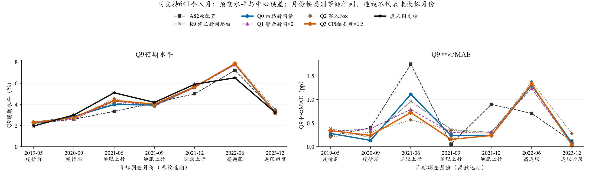
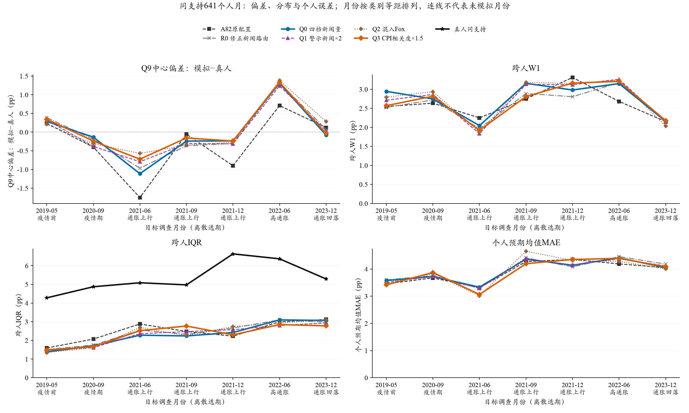
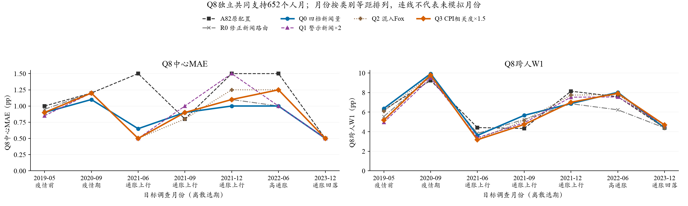
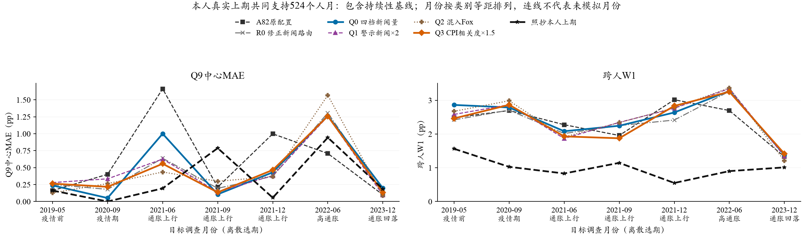
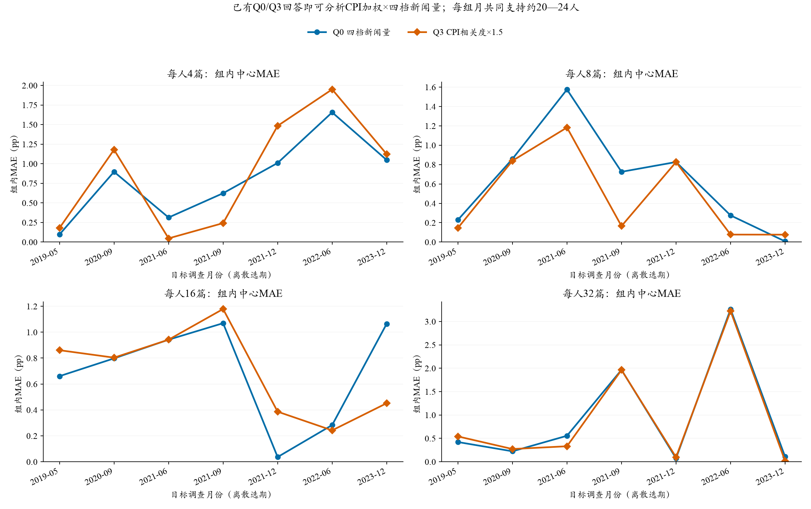
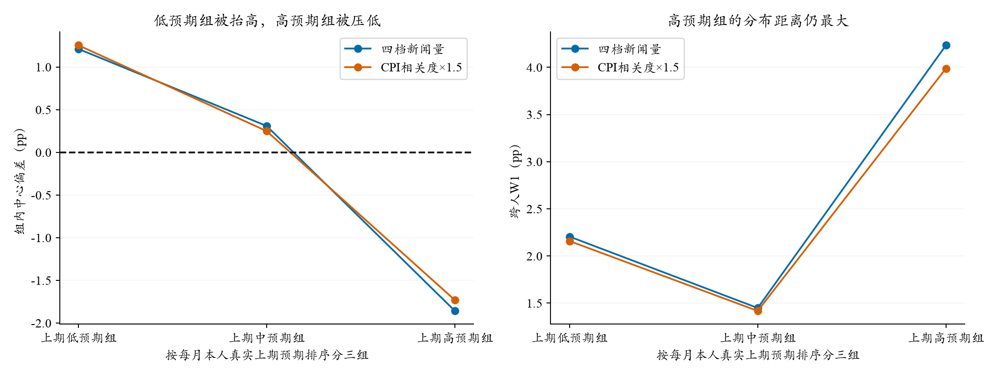

水上挽月 · SCE · 2026-10-25 · 研究中的探索性机制结果
新闻机制V3：相关价格信息有收益，微观差距仍在
运行与评价均成功。提高CPI直接相关新闻的抽取权重，带来本轮最清晰的中心误差信号；增加警示新闻和混入Fox的整体收益较弱，尚未突破照抄上期基线。
99.76%技术可用率：6,704 / 6,720
$4.500API已报告费用；未知费预留另计
−9.5%Q3相对Q0的中心MAE
新增：各组随月份变化的折线图
每条曲线是一种已运行配置；同月两遍等权，A82仍仅一遍。背景类型只帮助阅读，不用于事后分组筛选。横轴是七个离散选期，间隔等距；连线不代表中间月份已经模拟。
组别提醒：Q3已经是四档量＋CPI加权，Q1是四档量＋警示；两种权重的联合组尚未运行。Fox旧结果保留，后续暂缓。


展开Q8分月折线（独立口径）

展开与照抄上期基线的分月折线（另用524支持）

已有数据也能直接看：CPI加权×4／8／16／32篇
如果“CPI加权×四档新闻”指不同新闻量档内的效果差异，Q0和Q3已经提供了所需回答，无需新调用。以下在同档同人中比较；四档之间不是同一批居民，不能把组内MAE按25%平均成总体中位数MAE。

七期组内MAE平均：4篇档0.806→0.886、8篇档0.642→0.473、16篇档0.693→0.695、32篇档0.944→0.921pp。当前更明显的收益出现在8篇档，尚无“新闻越多、CPI权重越有效”的单调规律。每组月仅约20—24人，保留为探索性条件结果。
下一轮草稿：用最少新增回答补齐交叉
优先CPI×警示：复用Q0、Q1、Q3，只增加“四档量＋CPI1.5倍＋警示2倍”，实际需924次新请求。可选旧三档vs新四档：复用R0、Q0、Q3，只增加“原三档量＋CPI1.5倍”，另472次；看现有四档内部的差异不需要新增这一组。两个2×2共用旧组，不再跑Fox。
联合权重对同时满足两条件文章的加权部分得分乘3；由于还有50%均匀抽样、概率归一化和不放回抽取，并不等于曝光概率乘3。不能把既有两组的MAE改善简单相加。
两组全做时，同样七期96人、两遍，共2,688个新组合回答位置；完全相同提示的成功旧回答可复用1,288个，4个旧失败位置保留缺失，实际拟新增1,396次。输入草稿估费$1.38，保守预留$5.71，建议上限$6。当前新增API仍为0。
尚需官方Core干跑、新版执行/评价接线和明确授权，不能把此输入草稿当成已可直接付费运行。七期探索性边界不变；交叉差分同时报告个人预期变化与损失指标，损失交互不等于真人经济机制的因果系数。
原有结果及口径说明
2019-05、2020-09、2021-06/09/12、2022-06、2023-12，每期96人，五组各两遍。人口、个人历史信念、价格、采购角色、政策、模型及温度保持不变，主要替换新闻分配。模型为DeepSeek V3.2，经OpenRouter固定SiliconFlow FP8，温度0.5。
R0：沿原3/8/20篇，只修正重要CPI新闻路由；Q0：改4/8/16/32篇；Q1：Q0加警示文章抽取权重2倍；Q2：Q0部分个人新闻来自Fox；Q3：Q0加CPI直接相关权重1.5倍。Q1/Q2/Q3分别对Q0，不是逐项叠加。A82为这些人的原一遍归档回答。
2. 五组及原配置：统一支持后看收益与代价
以下统一使用641个人月：真人与各组两遍均可计分的人，权重相同，七个月及模型两遍等权；A82仍只有原一遍。中心指个人Q9拟合密度均值的跨人加权中位数，不是Q8，也不是完整全国headline。
主要信号：Q3相对Q0。中心MAE从0.485降至0.439pp（−9.5%），W1从2.742降至2.668pp，个人预期均值MAE从3.941降至3.910pp；跨人IQR从2.315增至2.338pp，真人为5.359pp。中心有所改善，宽度的缺口没有被补齐。Q8中心MAE则从0.864增至0.907pp。
相对A82原回答，Q3中心MAE为0.596→0.439pp；但W1为2.619→2.668pp，IQR为2.482→2.338pp。因此不能把整套新设计称为全面改善，也不能把单一历史生成对照当成纯粹路由因果效应。
3. 哪些月份改善？2021年有所缓解，2022年仍高估
2021年三个样本月的中心MAE：A82为0.902、R0为0.545、Q0为0.529、Q1为0.471、Q2为0.396、Q3为0.374pp。Q3相对Q0主要改善6月：1.113→0.725pp；9月为0.241→0.158pp，12月基本不变。2022-06仍明显高估，Q0为+1.307、Q3为+1.331pp。
稳健性：Q3两遍中心MAE差分别为−0.044、−0.048pp；但只有3/7月中心误差改善，删除2021-06后平均差变为+0.011pp。W1两遍差为−0.169、+0.022pp。收益值得记录，尚不能称跨月份稳定的分布改善。
Q1警示权重的主MAE为0.485→0.488pp，Q2混入Fox为0.485→0.482pp，均接近持平；两遍改善方向反转。它们能在2021年6月帮助上调，但同时在其他时期付出代价，不能据本轮证明“更负面／多媒体就更接近居民”。
展开逐月中心MAE（两遍等权；pp）
4. 与照抄本人上期比较：单独使用524个人月
新人和缺历史者没有真实上期回答，不能替他们虚构“照抄本人上期”。下表进一步限定为具有真人上期记录的共同524个人月。它与上面的641个人月是不同支持，不能交叉取数比较。
在这一支持上，Q3中心MAE为0.433pp，持续性基线为0.332pp；W1为2.375对1.003pp。新闻机制的局部改进确实存在，但仍未超过这个简单基线。
5. 分组告诉我们：均值压缩仍是核心缺口

按本人上期真实预期排序分三组，Q0低预期组中心偏差为+1.212pp，高预期组为−1.858pp；Q3分别为+1.254和−1.731pp。CPI相关信息减轻了高预期组的低估，但低预期组没有同步受益。高预期组W1为4.233→3.988pp，仍远大于中间组。
这与“模型把不同居民的预期往共同中心拉”的既有诊断一致。提高内容相关性可能帮助更新方向；仅增加情绪强度或媒体标签，尚不足以恢复个人信念持续性和组内差异。这是数据支持的机制线索，不是已识别的因果结论。每个组月约20—32人，不能据此继续精细调参。
6. 运行、费用与下一步
6,720次全部尝试、全部回包入档，0未知在途。15次连接失败；另1份回答重复bin5、缺bin8，保留合法Q8，Q9不猜测修复。没有观察到拒答。9份合法十档进行了登记的等比例归一化。生成约64.4分钟，API报告费用$4.49955，未知费用预留$0.05753，合计$4.55708；预留不等于确认扣费。
建议：记录CPI相关度权重为有希望的局部候选，不把警示2倍、Fox或整套四档量一并升级。当前不因这批结果重跑A82/B11；先把机制证据、收益和代价加入报告及研究包。如保留最后一次验证，应使用未参与调整的时期和额外新闻分配种子，同时保护2022年及近期高估时期。
七个月均已在A82中出现，仅为探索性机制诊断；固定新闻分配下的两遍是模型随机性，不是独立分配种子。新分析0 API、0 Q9重拟合。原运行、原评价及原报告不覆盖。聚合数据